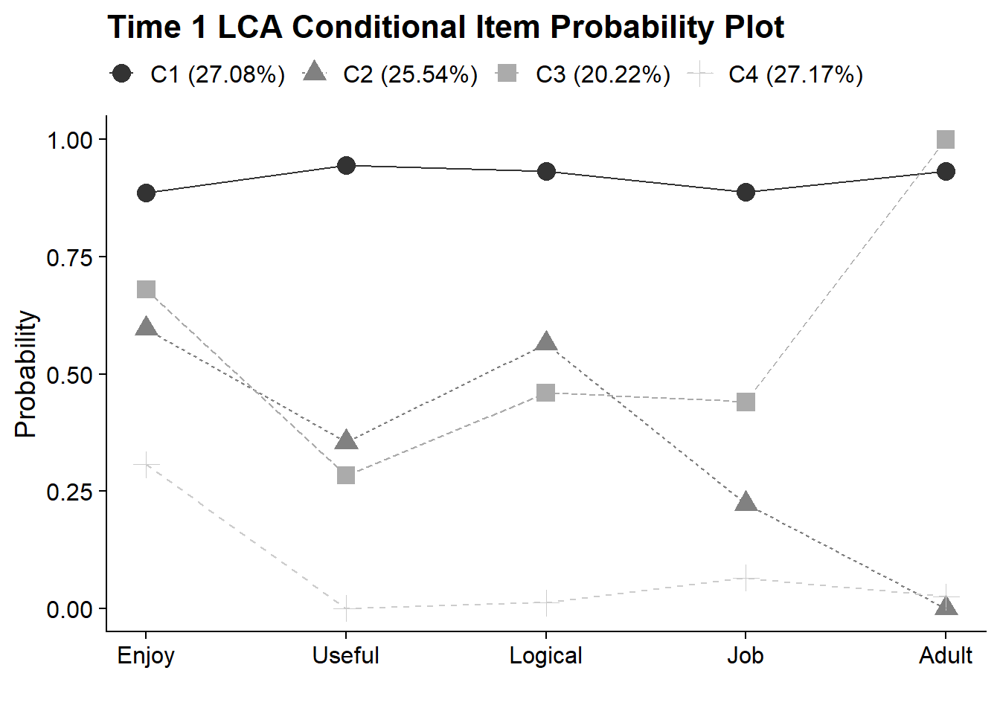

10 Create Model Fit Summary Table
Read all models for enumeration table
output_enum_t1 <- readModels(here("lta","enum_t1"), quiet = TRUE)
output_enum_t2 <- readModels(here("lta","enum_t2"), quiet = TRUE)Extract model fit data
enum_extract1 <- LatexSummaryTable(output_enum_t1,
keepCols=c("Title", "Parameters", "LL", "BIC", "aBIC",
"BLRT_PValue", "T11_VLMR_PValue","Observations"))
enum_extract2 <- LatexSummaryTable(output_enum_t2,
keepCols=c("Title", "Parameters", "LL", "BIC", "aBIC",
"BLRT_PValue", "T11_VLMR_PValue","Observations")) 10.1 Calculate Indices Derived from the Log Likelihood (LL)
allFit1 <- enum_extract1 %>%
mutate(aBIC = -2*LL+Parameters*log((Observations+2)/24)) %>%
mutate(CAIC = -2*LL+Parameters*(log(Observations)+1)) %>%
mutate(AWE = -2*LL+2*Parameters*(log(Observations)+1.5)) %>%
mutate(SIC = -.5*BIC) %>%
mutate(expSIC = exp(SIC - max(SIC))) %>%
mutate(BF = exp(SIC-lead(SIC))) %>%
mutate(cmPk = expSIC/sum(expSIC)) %>%
select(1:5,9:10,6:7,13,14) %>%
arrange(Parameters)
allFit2 <- enum_extract2 %>%
mutate(aBIC = -2*LL+Parameters*log((Observations+2)/24)) %>%
mutate(CAIC = -2*LL+Parameters*(log(Observations)+1)) %>%
mutate(AWE = -2*LL+2*Parameters*(log(Observations)+1.5)) %>%
mutate(SIC = -.5*BIC) %>%
mutate(expSIC = exp(SIC - max(SIC))) %>%
mutate(BF = exp(SIC-lead(SIC))) %>%
mutate(cmPk = expSIC/sum(expSIC)) %>%
select(1:5,9:10,6:7,13,14) %>%
arrange(Parameters)
allFit <- full_join(allFit1,allFit2)10.2 Format Fit Table
rows_m1 <- 1:6
rows_m2 <- 7:12
allFit %>%
mutate(Title = str_remove(Title, "_Time*")) %>%
gt() %>%
tab_header(
title = md("**Model Fit Summary Table**")) %>%
cols_label(
Title = "Classes",
Parameters = md("Par"),
LL = md("*LL*"),
T11_VLMR_PValue = "VLMR",
BLRT_PValue = "BLRT",
BF = md("BF"),
cmPk = md("*cmP_k*")) %>%
tab_footnote(
footnote = md(
"*Note.* Par = Parameters; *LL* = model log likelihood;
BIC = Bayesian information criterion;
aBIC = sample size adjusted BIC; CAIC = consistent Akaike information criterion;
AWE = approximate weight of evidence criterion;
BLRT = bootstrapped likelihood ratio test p-value;
VLMR = Vuong-Lo-Mendell-Rubin adjusted likelihood ratio test p-value;
cmPk = approximate correct model probability."),
locations = cells_title()) %>%
tab_options(column_labels.font.weight = "bold") %>%
fmt_number(10,decimals = 2,
drop_trailing_zeros=TRUE,
suffixing = TRUE) %>%
fmt_number(c(3:9,11),
decimals = 2) %>%
fmt_missing(1:11,
missing_text = "--") %>%
fmt(c(8:9,11),
fns = function(x)
ifelse(x<0.001, "<.001",
scales::number(x, accuracy = 0.01))) %>%
fmt(10, fns = function(x)
ifelse(x>100, ">100",
scales::number(x, accuracy = .1))) %>%
tab_row_group(
group = "Time-1",
rows = 1:6) %>%
tab_row_group(
group = "Time-2",
rows = 7:12) %>%
row_group_order(
groups = c("Time-1","Time-2")
) %>%
tab_style(
style = list(
cell_text(weight = "bold")
),
locations = list(cells_body(
columns = BIC,
row = BIC == min(BIC[rows_m1]) # Model 1
),
cells_body(
columns = aBIC,
row = aBIC == min(aBIC[rows_m1])
),
cells_body(
columns = CAIC,
row = CAIC == min(CAIC[rows_m1])
),
cells_body(
columns = AWE,
row = AWE == min(AWE[rows_m1])
),
cells_body(
columns = cmPk,
row = cmPk == max(cmPk[rows_m1])
),
cells_body(
columns = BIC,
row = BIC == min(BIC[rows_m2]) # Model 2
),
cells_body(
columns = aBIC,
row = aBIC == min(aBIC[rows_m2])
),
cells_body(
columns = CAIC,
row = CAIC == min(CAIC[rows_m2])
),
cells_body(
columns = AWE,
row = AWE == min(AWE[rows_m2])
),
cells_body(
columns = cmPk,
row = cmPk == max(cmPk[rows_m2])
),
cells_body(
columns = BF,
row = BF > 10),
cells_body(
columns = BLRT_PValue,
row = ifelse(BLRT_PValue < .05 & lead(BLRT_PValue) > .05, BLRT_PValue < .05, NA)),
cells_body(
columns = T11_VLMR_PValue,
row = ifelse(T11_VLMR_PValue < .05 & lead(T11_VLMR_PValue) > .05, T11_VLMR_PValue < .05, NA))
)
)| Model Fit Summary Table1 | ||||||||||
| Classes | Par | LL | BIC | aBIC | CAIC | AWE | BLRT | VLMR | BF | cmP_k |
|---|---|---|---|---|---|---|---|---|---|---|
| Time-1 | ||||||||||
| Class-11 | 5 | −10,250.60 | 20,541.34 | 20,525.45 | 20,546.34 | 20,596.47 | – | – | 0.0 | <.001 |
| Class-21 | 11 | −8,785.32 | 17,658.92 | 17,623.97 | 17,669.93 | 17,780.22 | <.001 | <.001 | 0.0 | <.001 |
| Class-31 | 17 | −8,693.57 | 17,523.59 | 17,469.57 | 17,540.59 | 17,711.04 | <.001 | <.001 | 0.0 | 0.00 |
| Class-41 | 23 | −8,664.09 | 17,512.79 | 17,439.71 | 17,535.79 | 17,766.40 | <.001 | <.001 | >100 | 1.00 |
| Class-51 | 29 | −8,662.39 | 17,557.54 | 17,465.40 | 17,586.54 | 17,877.31 | 1.00 | 0.66 | >100 | <.001 |
| Class-61 | 35 | −8,661.54 | 17,604.01 | 17,492.80 | 17,639.01 | 17,989.94 | 0.67 | 0.93 | – | <.001 |
| Time-2 | ||||||||||
| Class-12 | 5 | −7,658.79 | 15,356.19 | 15,340.30 | 15,361.19 | 15,409.80 | – | – | 0.0 | <.001 |
| Class-22 | 11 | −6,073.81 | 12,232.56 | 12,197.61 | 12,243.56 | 12,350.50 | <.001 | <.001 | 0.0 | <.001 |
| Class-32 | 17 | −5,988.36 | 12,107.99 | 12,053.98 | 12,124.99 | 12,290.27 | <.001 | <.001 | 0.5 | 0.32 |
| Class-42 | 23 | −5,964.45 | 12,106.50 | 12,033.43 | 12,129.51 | 12,353.12 | <.001 | 0.00 | >100 | 0.68 |
| Class-52 | 29 | −5,961.68 | 12,147.30 | 12,055.16 | 12,176.30 | 12,458.25 | 0.67 | 0.36 | >100 | <.001 |
| Class-62 | 35 | −5,961.26 | 12,192.79 | 12,081.59 | 12,227.79 | 12,568.07 | 1.00 | 0.57 | – | <.001 |
| 1 Note. Par = Parameters; LL = model log likelihood; BIC = Bayesian information criterion; aBIC = sample size adjusted BIC; CAIC = consistent Akaike information criterion; AWE = approximate weight of evidence criterion; BLRT = bootstrapped likelihood ratio test p-value; VLMR = Vuong-Lo-Mendell-Rubin adjusted likelihood ratio test p-value; cmPk = approximate correct model probability. | ||||||||||
10.3 Compare Time 1 & Time 2 LCA Plots
Read models for plotting (4-class models)
model_t1_c4 <- output_enum_t1$c4_lca_enum_time1.out
model_t2_c4 <- output_enum_t2$c4_lca_enum_time2.out
10.3.1 Create a function plot_lca_function that requires 5 arguments:
-
model_name: name of Mplus model object (e.g.,model_t1_c4) -
item_num: the number of items in LCA measurement model (e.g.,5) -
class_num: the number of classes (k) in LCA model (e.g.,4) -
item_labels: the item labels for x-axis (e.g.,c("Enjoy","Useful","Logical","Job","Adult")) -
plot_title: include the title of the plot here (e.g.,"Time 1 LCA Conditional Item Probability Plot")
plot_lca_function <- function(model_name,item_num,class_num,item_labels,plot_title){
mplus_model <- as.data.frame(model_name$gh5$means_and_variances_data$estimated_probs$values)
plot_t1 <- mplus_model[seq(2, 2*item_num, 2),]
c_size <- as.data.frame(model_name$class_counts$modelEstimated$proportion)
colnames(c_size) <- paste0("cs")
c_size <- c_size %>% mutate(cs = round(cs*100, 2))
colnames(plot_t1) <- paste0("C", 1:class_num, glue(" ({c_size[1:class_num,]}%)"))
plot_t1 <- cbind(Var = paste0("U", 1:item_num), plot_t1)
plot_t1$Var <- factor(plot_t1$Var,
labels = item_labels)
plot_t1$Var <- fct_inorder(plot_t1$Var)
pd_long_t1 <- melt(plot_t1, id.vars = "Var")
p <- pd_long_t1 %>%
ggplot(aes(x = as.integer(Var), y = value,
shape = variable, colour = variable, lty = variable)) +
geom_point(size = 4) + geom_line() +
scale_x_continuous("", breaks = 1:5, labels = plot_t1$Var) +
scale_colour_grey() +
labs(title = plot_title, y = "Probability") +
theme_cowplot() +
theme(legend.title = element_blank(),
legend.position = "top")
p
return(p)
}10.3.2 Time 1 LCA - Conditional Item Probability Plot
plot_lca_function(
model_name = model_t1_c4,
item_num = 5,
class_num = 4,
item_labels = c("Enjoy","Useful","Logical","Job","Adult"),
plot_title = "Time 1 LCA Conditional Item Probability Plot"
)
10.3.3 Time 2 LCA - Conditional Item Probability Plot
plot_lca_function(
model_name = model_t2_c4,
item_num = 5,
class_num = 4,
item_labels = c("Enjoy","Useful","Logical","Job","Adult"),
plot_title = "Time 2 LCA Conditional Item Probability Plot"
)